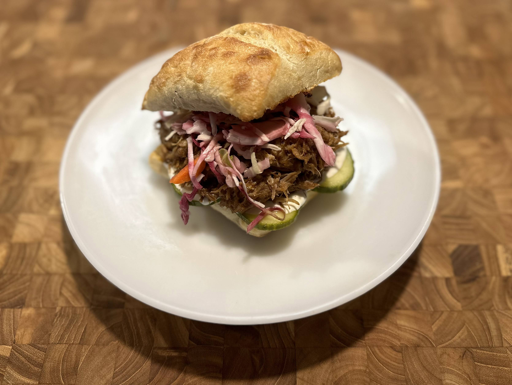

Pulled Pork

Ingredients
Pork Butt/Shoulder
Neutral Oil
Apple Cider Vinegar
BBQ Sauce
BBQ Seasoning Mix
Cumin
Paprika
Chili Powder
Garlic Powder
Onion Powder
Oregano
Salt & Pepper
Instructions
Preheat oven to 325
Coat dutch oven with neutral oil
Trim off excess fat/sinew from the cut of pork
Cut pork into smaller chunks
Generously cover pork with seasoning mix
Add a splash of water and/or apple cider vinegar
Cover and bake for 3 hours or until it starts to fall apart
Take out of oven and shred in the pot
Mix in BBQ sauce to shredded pork and serve